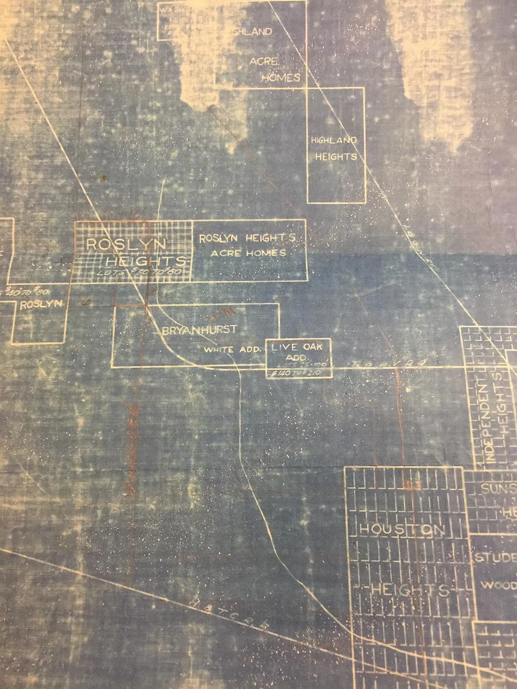
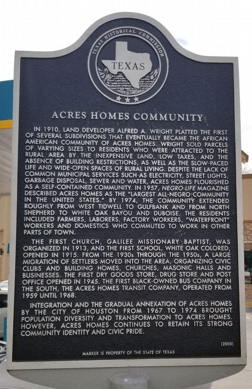

Acres Homes is one of the oldest and largest historically Black communities in Texas — founded on the idea that families deserved room to build, grow, and own.
In 1910, land developer Alfred A. Wright platted the first of several subdivisions that eventually became Acres Homes. Wright sold parcels of varying sizes to residents drawn by inexpensive land, low taxes, and the absence of building restrictions — space enough for a garden, chickens, or farm animals, divided by the acre rather than the standard city lot. That's how the community got its name.
Despite lacking common municipal services — electricity, street lights, garbage disposal, sewer, and water — Acres Homes flourished as a self-contained community. By 1974 it extended roughly from West Tidwell to Gulfbank and from North Shepherd to White Oak Bayou and Dubose Street, home to farmers, laborers, factory workers, and domestics who commuted to work elsewhere in Houston.
Sourced from: the official Texas Historical Commission marker for the Acres Homes Community (erected 2008; see photo below), and the Texas State Historical Association's Handbook of Texas: Acres Homes. Still verify: the precise current legal boundary to use for any future petition, since neighborhood boundaries have shifted since 1974 — check against Harris County Archives and City of Houston records.

A rough shape of the community's history — every date below needs confirmation before publishing.
The first of several subdivisions that become Acres Homes are platted in acre-sized lots, drawing residents with inexpensive land, low taxes, and no building restrictions at a time when housing inside Houston's city limits was often closed off by discriminatory covenants and lending practices.
Galilee Missionary Baptist, the community's first church, organizes in 1913. White Oak Colored, the first school, opens in 1915 — early anchors of a community building its own institutions from the ground up.
A large migration of settlers builds homes, churches, and Masonic halls, and organizes civic clubs — all without electricity, street lights, sewer, or water from any city. By 1945 the community has its first dry goods store, drug store, and post office. In 1957, Negro Life magazine calls Acres Homes the "largest all-Negro community in the United States."
Residents commuting to jobs elsewhere in Houston are served by the first Black-owned bus company in the South, based right here in Acres Homes.

The City of Houston annexes roughly 725 acres of Acres Homes in 1967, then another 1,469 acres in 1974, bringing the community fully inside Houston's city limits and beginning decades of population change. This is the pivotal legal fact for today's campaign — see The Process for why it matters.
Acres Homes retains a strong community identity and civic pride, and Houston's Super Neighborhood system gives it an official advisory council — but final authority over budget, zoning, and services still sits with citywide government, not local residents.
Still a close-knit, majority-Black community with deep multi-generational roots — and a growing Latino population — Acres Homes today is officially recognized by the City of Houston as Super Neighborhood #12.
Large residential lots, single-family homes, and multi-generational households remain a defining feature, distinct from much of urban Houston.
Long-standing churches, civic clubs, and a Super Neighborhood council give residents an organized voice — but only advisory power within Houston's government.
Generations of families who have owned land here since incorporation-era Houston didn't yet reach this far northwest.
This is a community-built campaign site, not an official government publication. Historical and statistical claims on this site are marked "verify" where the committee has not yet confirmed them against a primary source. Before this site is shared broadly, each of the following should be checked and cited:
The Texas Historical Commission marker for Acres Homes Community (pictured), the Handbook of Texas (Texas State Historical Association), Houston Public Library archives, City of Houston Planning & Development Super Neighborhoods records, U.S. Census Bureau data, and interviews with long-time residents and local historians.
